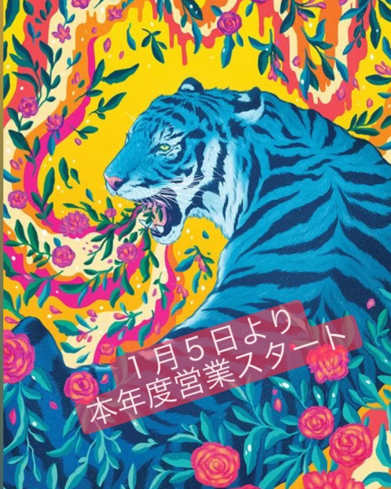
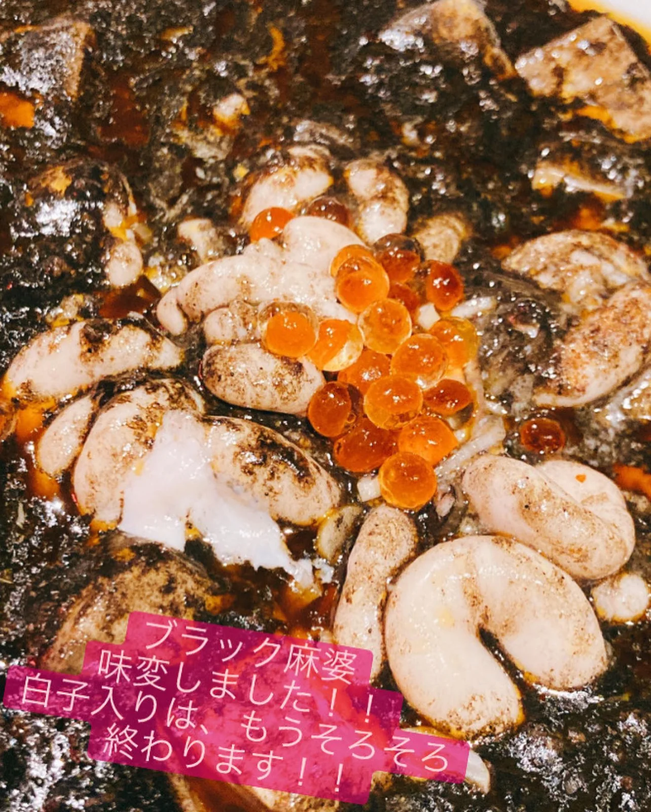
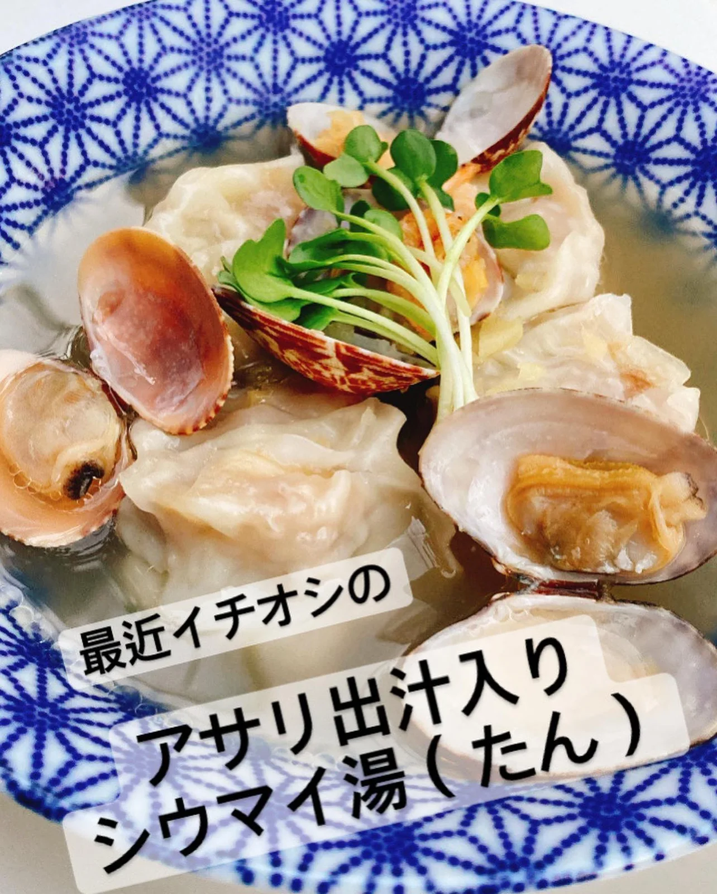

2022年1月4日
明けましておめでとうございます🎍🎍



明けましておめでとうございます🎍🎍 今年もよろしくお願いいたします！ さて、今年はどんな年にしようかなと考えていたんですが、、、 店主の二見は今年をもって有馬を卒業！！！！！ っていうくらいの勢いで頑張ります！！ 店をオープンしてから早６年。そろそろ、後継人も考えていかなあかんなぁと思っております！うまくいったらの話ですが、、😂 新しい事にも挑戦しないと脳腐りますからね！ 残り死ぬ気でええ店にします！！ うまくいったらですが、、😂 有馬の商品も料理長が、色々とテコ入れしていってます！麻婆とかシウマイの味変えたり、刺身やったり、新メニューやったり。 久しく来てないお客様！ 思い出したらぜひともご来店ください！！ 今年も有馬をよろしくお願いいたします🙇♂️ #中華バル#中華#中華料理#福島区グルメ#路地裏#B級グルメ#中国#チャイニーズ#路地裏チャイニーズ有馬#有馬#シュウマイ#餃子#点心#フォローミー#followme#パクチー#麻婆豆腐#営業再開#餃子